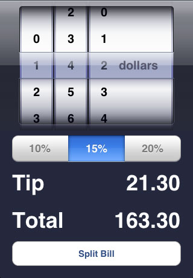
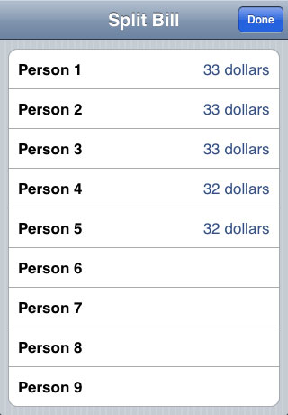

Calculate tips and split bills easily with TipCalc! TipCalc is an easy tip calculator for your iPhone or iPod Touch. Spin the dial and TipCalc calculates tips for you. Split bills with your friends with one button. No numbers to type in! TipCalc does the math for you with ease!
Features
- Calculate tips with easy touch controls!
- Split bills easily with your friends, rounded to the nearest dollar automatically!
Screenshots


Known Issues
-
Wrapping dials - Right now, the "ones" dial wraps around, but also moves the "tens" and "hundreds" dials as well as you wrap. Ideally,
this should happen instantly, but due to a limit in the iPhone picker, I'll need to turn that off. This should be resolved as soon as software updates become available.
Contact Me
If you're having problems using TipCalc, or suggestions on future improvements, please feel free to send e-mail to tipcalc@satine.org with "TipCalc" in the subject header.